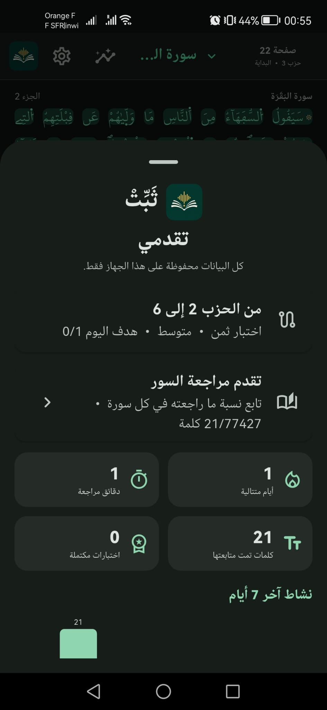

تسميع ومتابعة للكلمات
ابدأ من أي موضع في الصفحة، وتابع الكلمات أثناء التلاوة مع تنبيه عند وجود خطأ محتمل.
ثَبِّتْ مساعد للمراجعة والتسميع برواية ورش عن نافع؛ أخفِ الصفحة، اختبر نفسك، وتابع تقدمك في تجربة هادئة تحفظ بياناتك على جهازك.

أدوات بسيطة تساعدك على الاستمرار، دون تشتيت أو إعدادات معقّدة.
ابدأ من أي موضع في الصفحة، وتابع الكلمات أثناء التلاوة مع تنبيه عند وجود خطأ محتمل.
أخفِ النص كاملًا، ثم اطلب إظهار الكلمة أو الآية عند الحاجة واختبر حفظك دون تلميحات زائدة.
اختر نطاق الأحزاب ومستوى المساعدة والهدف اليومي، وانتقل إلى مواضع جديدة مع كل اختبار.
تابع نشاطك، الجلسات الأخيرة، الصفحات التي راجعتها والأخطاء المحتملة المحفوظة محليًا.
تنقّل سريع بين السور والصفحات وتقسيمات الحزب، مع دعم الوضعين الفاتح والداكن.
الصور التعريفية التالية من مرحلة الاختبار، وقد حُفظ محتواها الأصلي دون أي تعديل.
يُستخدم الميكروفون أثناء جلسة التسميع لمعالجة التلاوة على الجهاز. لا ينشئ التطبيق تسجيلًا صوتيًا دائمًا، ولا يرفع صوتك إلى خادم.
ثَبِّتْ لا يقيّم أحكام التجويد، ولا يحكم على صحة التلاوة، ولا يغني عن شيخ أو معلّم متقن. قد يخطئ نموذج التعرّف أحيانًا؛ راجع النتائج مع معلّم مؤهل في رواية ورش عن نافع.
متاح الآن لأجهزة أندرويد. نسخة iPhone قيد الإعداد وستُضاف هنا فور نشرها.